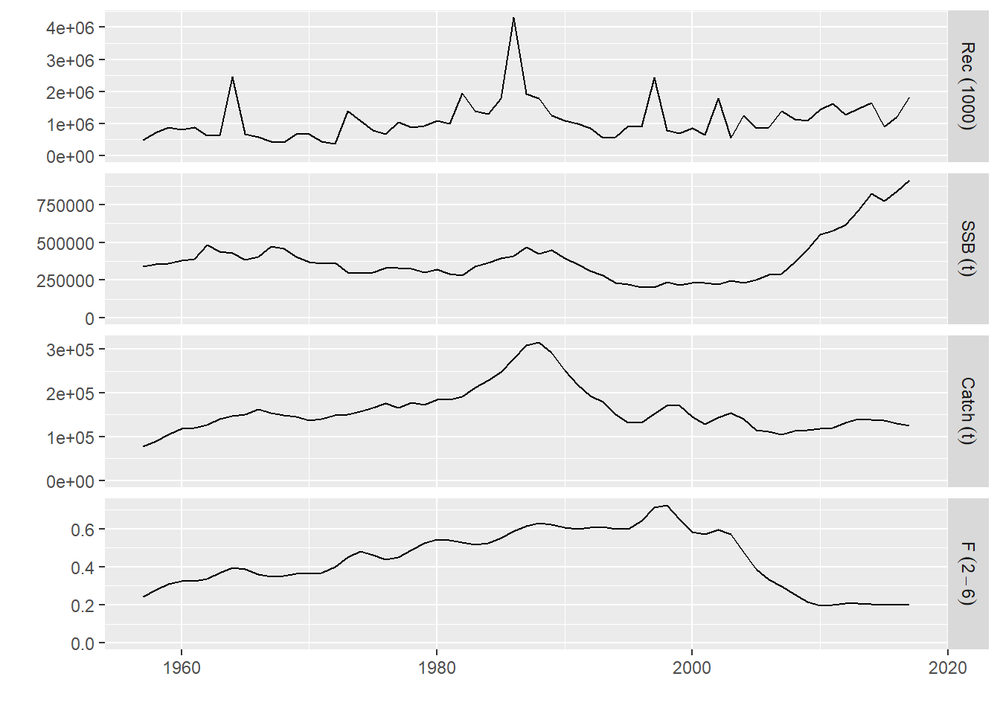
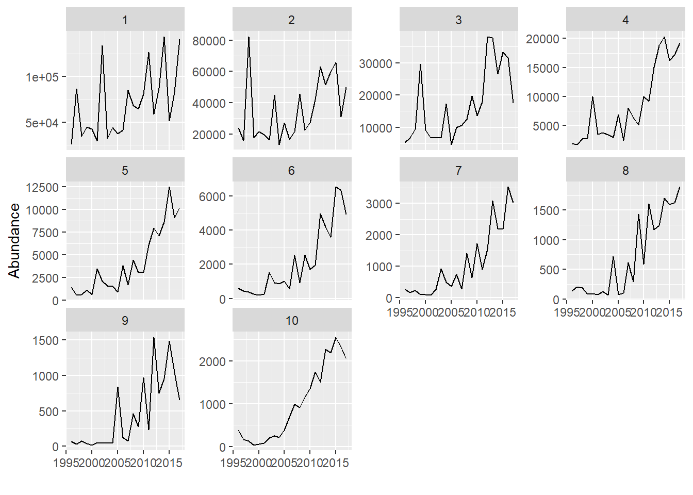
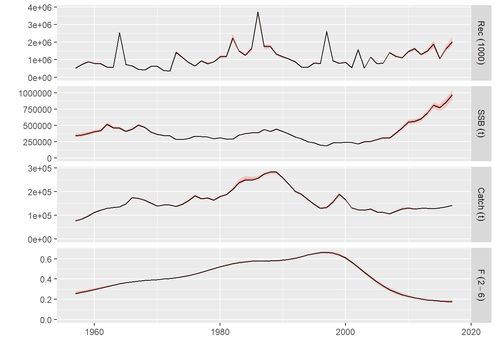
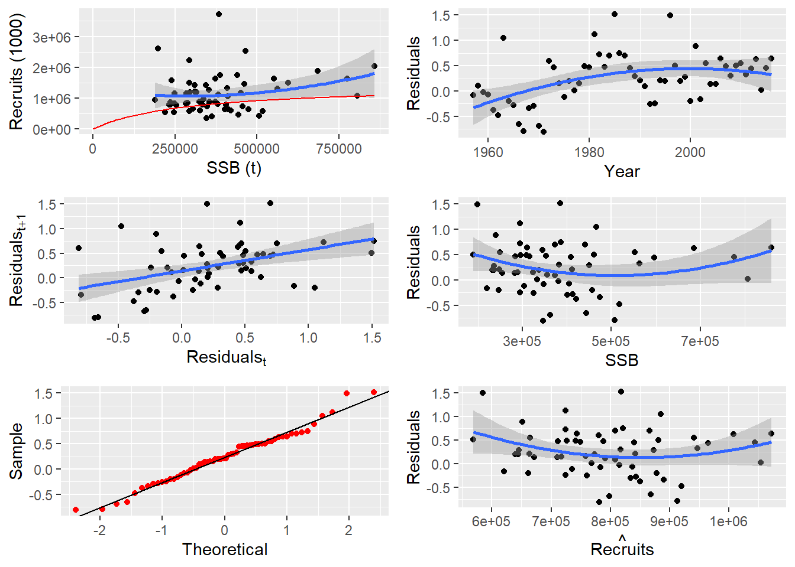
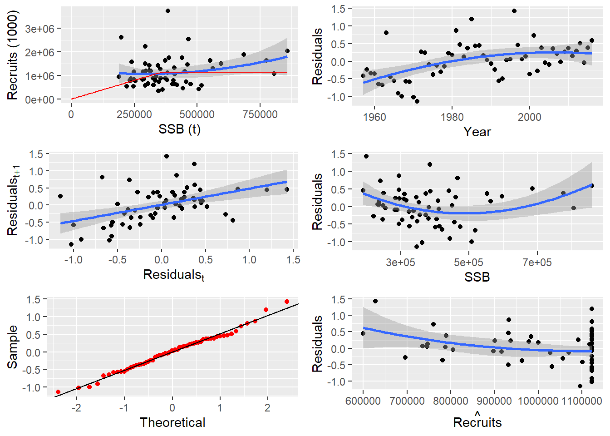
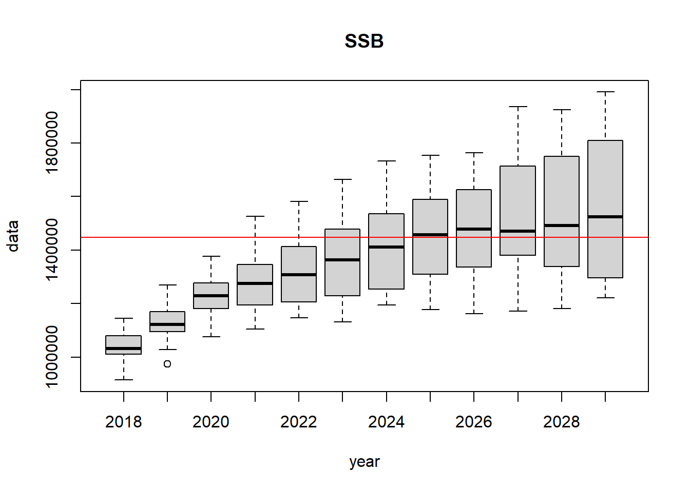
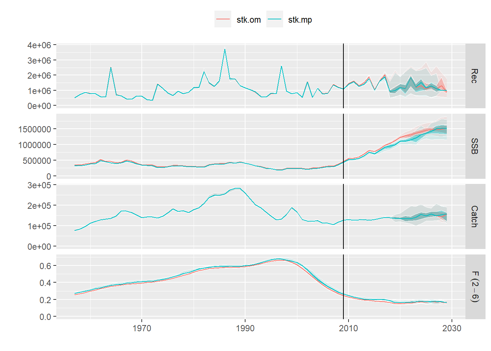

La Evaluación de la estrategia de gestión (MSE) es un marco para evaluar el desempeño de las Reglas de control de captura (HCR) frente a las incertidumbres predominantes (Punt et al. 2016). Este tutorial presenta los pasos básicos para construir un MSE single-species: acondicionamiento del modelo operativo, configuración del modelo de error de observación, construcción de un HCR basado en un modelo simple (basado en el enfoque ICES MSY), realización de simulaciones MSE (incluida la retroalimentación) y producir estadísticas de desempeño.
El link del tutorial es el siguiente: https://flr-project.org/doc/An_introduction_to_MSE_using_FLR.html
#### Loads all necessary packages ####
library(FLa4a)
library(FLash)
library(FLXSA)
library(FLBRP)
library(ggplotFL)El condicionamiento del modelo operativo es un paso clave en la
construcción de un análisis MSE, ya que permite que los modelos
operativos se consideren “plausibles” en el sentido de que son
consistentes con los datos observados. En este tutorial, el modelo de
evaluación a4a se ajusta a los datos dentro de los objetos
ple4 FLStock y ple4.index FLIndex para
producir stk, el objeto del modelo operativo
FLStock.
Se utiliza un método mcmc dentro de la evaluación
a4a para obtener la incertidumbre de los parámetros,
reflejada en la dimensión iter de stk.
data(ple4)
data(ple4.index)
stk <- ple4
idx <- FLIndices(idx=ple4.index)
plot(ple4)
plot(ple4.index)
En este tutorial, se utilizan 20 iteraciones junto con una ventana de proyección de 12 años. Se utiliza un período de 3 años para calcular los promedios necesarios para las proyecciones (por ejemplo, pesos medios, etc.).
ple4)ple4)# Set up the iteration and projection window parameters (years) ----------------
it <- 20 # iterations
y0 <- range(stk)["minyear"] # initial data year
dy <- range(stk)["maxyear"] # final data year
iy <- dy+1 # initial year of projection (also intermediate year)
ny <- 12 # number of years to project from initial year
fy <- dy+ny # final year
nsqy <- 3 # number of years to compute status quo metricsa4aConfigure el modelo operativo (incluida la incertidumbre de los
parámetros) en función del ajuste del modelo de evaluación
a4a a los datos. Los puntos de referencia se obtienen para
una stk “mediana” (stk0) para imitar las
mejores estimaciones de los puntos de referencia utilizados en el
enfoque ICES MSY.
# Set up the catchability submodel with a smoothing spline (setting up a 'list' allows for more than one index)
qmod <- list(~s(age, k=6))
# Set up the fishing mortality submodel as a tensor spline, which allows age and year to interact
fmod <- ~te(replace(age, age>9,9), year, k=c(6,8))
# Set up the MCMC parameters
mcsave <- 100
mcmc <- it * mcsave
# Fit the model
fit <- sca(stk, idx, fmodel = fmod,
qmodel = qmod,
fit = "MCMC",
mcmc = SCAMCMC(mcmc = mcmc,
mcsave = mcsave,
mcprobe = 0.4))
# Update the FLStock object
stk <- stk + fit
plot(stk)
# Reduce to keep one iteration only for reference points
stk0 <- qapply(stk, iterMedians)Se ajusta un modelo stock-recluta de Beverton-Holt para cada
iteración, con residuos generados para la ventana de proyección basados
en los residuos del período histórico. También se ajusta un modelo de
stock-recluta al stk “mediana” como puntos de
referencia.
# ** Fit the stock-recruit model ** --------------------------------------------
srbh <- fmle(as.FLSR(stk, model="bevholt"),
method="L-BFGS-B",
lower=c(1e-6, 1e-6),
upper=c(max(rec(stk)) * 3, Inf))#> final value -20.758968
#> converged
#> final value -20.758968
#> converged
#> final value -20.768159
#> converged
#> final value -20.935400
#> converged
#> final value -21.007624
#> converged
#> final value -20.439052
#> converged
#> final value -21.316012
#> converged
#> final value -21.310005
#> converged
#> final value -20.554047
#> converged
#> final value -20.004885
#> converged
#> final value -18.967237
#> converged
#> final value -19.170771
#> converged
#> final value -18.891406
#> converged
#> final value -18.756519
#> converged
#> final value -19.229060
#> converged
#> final value -20.340877
#> converged
#> final value -20.806457
#> converged
#> final value -21.515995
#> converged
#> final value -20.407033
#> converged
#> final value -20.233131
#> convergedsrbh0 <- fmle(as.FLSR(stk0, model="bevholt"),
method="L-BFGS-B",
lower=c(1e-6, 1e-6),
upper=c(max(rec(stk)) * 3, Inf))#> final value -20.364047
#> convergedplot(srbh0)
# Generate stock-recruit residuals for the projection period
srbh.res <- rnorm(it,
FLQuant(0, dimnames=list(year=iy:fy)),
mean(c(apply(residuals(srbh), 6, sd))))# Segmented regression to 'estimate' Blim.
srsegreg0 <- fmle(as.FLSR(stk0, model="segreg"),
method="L-BFGS-B",
lower=c(1e-6, 1e-6),
upper=c(max(rec(stk)) * 3, Inf)) #> final value -23.889301
#> convergedplot(srsegreg0)
Puntos de referencia basados en el stk “mediano”,
asumiendo (solo con fines ilustrativos) que \(B_{pa}=0.5_{B_{msy}}\) y \(B_{lim}=B_{pa}/1.4\).
El método stf se aplica al objeto stk del
modelo operativo para tener los datos necesarios (pesos medios, etc.)
para la ventana de proyección.
NOTA: En el ejemplo de Dorleta se usan otros puntos de referencia
# Calculate the reference points
brp <- brp(FLBRP(stk0, srbh0))
refpts(brp)#> An object of class "FLPar"
#> quant
#> refpt harvest yield rec ssb biomass revenue cost
#> virgin 0.00e+00 0.00e+00 1.34e+06 4.60e+06 4.74e+06 NA NA
#> msy 1.64e-01 1.01e+05 1.19e+06 1.45e+06 1.57e+06 NA NA
#> crash 5.38e-01 9.06e-07 1.58e-05 3.17e-06 4.41e-06 NA NA
#> f0.1 1.56e-01 1.01e+05 1.20e+06 1.54e+06 1.66e+06 NA NA
#> fmax 2.12e-01 9.71e+04 1.12e+06 1.04e+06 1.14e+06 NA NA
#> spr.30 1.94e-01 9.94e+04 1.15e+06 1.18e+06 1.29e+06 NA NA
#> mey NA NA NA NA NA NA NA
#> quant
#> refpt profit
#> virgin NA
#> msy NA
#> crash NA
#> f0.1 NA
#> fmax NA
#> spr.30 NA
#> mey NA
#> units: NAFmsy <- c(refpts(brp)["msy","harvest"])
msy <- c(refpts(brp)["msy","yield"])
Bmsy <- c(refpts(brp)["msy","ssb"])
Blim <- srsegreg0@params$b[drop=T]
Bpa <- Blim*exp(1.654*sqrt(var(ssb(stk)/mean(ssb(stk))))) #Prepare the FLStock object for projections
stk <- stf(stk, fy-dy, nsqy, nsqy)
stk@stock.wt#> An object of class "FLQuant"
#> iters: 20
#>
#> , , unit = unique, season = all, area = unique
#>
#> year
#> age 1957 1958 1959 1960 1961 1962
#> 1 0.038000(0) 0.041000(0) 0.045000(0) 0.038000(0) 0.037000(0) 0.036000(0)
#> 2 0.102000(0) 0.093000(0) 0.106000(0) 0.111000(0) 0.098000(0) 0.096000(0)
#> 3 0.157000(0) 0.180000(0) 0.173000(0) 0.181000(0) 0.185000(0) 0.173000(0)
#> 4 0.242000(0) 0.272000(0) 0.264000(0) 0.272000(0) 0.306000(0) 0.301000(0)
#> 5 0.325000(0) 0.303000(0) 0.329000(0) 0.364000(0) 0.337000(0) 0.424000(0)
#> 6 0.485000(0) 0.442000(0) 0.470000(0) 0.469000(0) 0.483000(0) 0.573000(0)
#> 7 0.719000(0) 0.577000(0) 0.650000(0) 0.633000(0) 0.579000(0) 0.684000(0)
#> 8 0.682000(0) 0.778000(0) 0.686000(0) 0.726000(0) 0.691000(0) 0.806000(0)
#> 9 0.844000(0) 0.793000(0) 0.908000(0) 0.845000(0) 0.779000(0) 0.873000(0)
#> 10 0.918000(0) 0.945000(0) 0.897000(0) 0.918000(0) 0.911000(0) 1.335000(0)
#> year
#> age 1963 1964 1965 1966 1967 1968
#> 1 0.041000(0) 0.024000(0) 0.031000(0) 0.031000(0) 0.029000(0) 0.055000(0)
#> 2 0.103000(0) 0.113000(0) 0.068000(0) 0.099000(0) 0.104000(0) 0.094000(0)
#> 3 0.176000(0) 0.184000(0) 0.198000(0) 0.127000(0) 0.179000(0) 0.175000(0)
#> 4 0.273000(0) 0.296000(0) 0.294000(0) 0.305000(0) 0.205000(0) 0.287000(0)
#> 5 0.378000(0) 0.373000(0) 0.333000(0) 0.403000(0) 0.442000(0) 0.344000(0)
#> 6 0.540000(0) 0.477000(0) 0.430000(0) 0.455000(0) 0.528000(0) 0.532000(0)
#> 7 0.663000(0) 0.645000(0) 0.516000(0) 0.503000(0) 0.585000(0) 0.592000(0)
#> 8 0.788000(0) 0.673000(0) 0.601000(0) 0.565000(0) 0.650000(0) 0.362000(0)
#> 9 0.882000(0) 0.845000(0) 0.722000(0) 0.581000(0) 0.703000(0) 0.667000(0)
#> 10 0.961000(0) 0.973000(0) 0.578000(0) 0.848000(0) 0.833000(0) 0.746000(0)
#> year
#> age 1969 1970 1971 1972 1973 1974
#> 1 0.047000(0) 0.043000(0) 0.051000(0) 0.056000(0) 0.037000(0) 0.049000(0)
#> 2 0.158000(0) 0.113000(0) 0.109000(0) 0.158000(0) 0.134000(0) 0.105000(0)
#> 3 0.188000(0) 0.236000(0) 0.251000(0) 0.218000(0) 0.237000(0) 0.217000(0)
#> 4 0.266000(0) 0.274000(0) 0.344000(0) 0.407000(0) 0.308000(0) 0.416000(0)
#> 5 0.344000(0) 0.369000(0) 0.413000(0) 0.473000(0) 0.468000(0) 0.437000(0)
#> 6 0.390000(0) 0.410000(0) 0.489000(0) 0.534000(0) 0.521000(0) 0.524000(0)
#> 7 0.565000(0) 0.468000(0) 0.512000(0) 0.579000(0) 0.566000(0) 0.570000(0)
#> 8 0.621000(0) 0.636000(0) 0.583000(0) 0.606000(0) 0.583000(0) 0.629000(0)
#> 9 0.679000(0) 0.732000(0) 0.696000(0) 0.655000(0) 0.617000(0) 0.652000(0)
#> 10 0.635000(0) 0.747000(0) 0.707000(0) 0.759000(0) 0.690000(0) 0.690000(0)
#> year
#> age 1975 1976 1977 1978 1979 1980
#> 1 0.063000(0) 0.082000(0) 0.064000(0) 0.064000(0) 0.062000(0) 0.049000(0)
#> 2 0.141000(0) 0.169000(0) 0.184000(0) 0.151000(0) 0.179000(0) 0.163000(0)
#> 3 0.187000(0) 0.226000(0) 0.265000(0) 0.319000(0) 0.258000(0) 0.289000(0)
#> 4 0.388000(0) 0.308000(0) 0.311000(0) 0.373000(0) 0.365000(0) 0.428000(0)
#> 5 0.483000(0) 0.484000(0) 0.405000(0) 0.411000(0) 0.414000(0) 0.444000(0)
#> 6 0.544000(0) 0.550000(0) 0.551000(0) 0.467000(0) 0.459000(0) 0.524000(0)
#> 7 0.610000(0) 0.593000(0) 0.627000(0) 0.547000(0) 0.543000(0) 0.582000(0)
#> 8 0.668000(0) 0.658000(0) 0.690000(0) 0.630000(0) 0.667000(0) 0.651000(0)
#> 9 0.704000(0) 0.694000(0) 0.667000(0) 0.704000(0) 0.764000(0) 0.778000(0)
#> 10 0.762000(0) 0.743000(0) 0.759000(0) 0.773000(0) 0.826000(0) 1.025000(0)
#> year
#> age 1981 1982 1983 1984 1985 1986
#> 1 0.041000(0) 0.048000(0) 0.045000(0) 0.048000(0) 0.048000(0) 0.043000(0)
#> 2 0.140000(0) 0.128000(0) 0.128000(0) 0.129000(0) 0.146000(0) 0.126000(0)
#> 3 0.239000(0) 0.250000(0) 0.242000(0) 0.216000(0) 0.232000(0) 0.245000(0)
#> 4 0.421000(0) 0.351000(0) 0.381000(0) 0.413000(0) 0.320000(0) 0.311000(0)
#> 5 0.473000(0) 0.490000(0) 0.494000(0) 0.464000(0) 0.452000(0) 0.440000(0)
#> 6 0.536000(0) 0.589000(0) 0.559000(0) 0.571000(0) 0.536000(0) 0.533000(0)
#> 7 0.570000(0) 0.631000(0) 0.624000(0) 0.649000(0) 0.635000(0) 0.692000(0)
#> 8 0.624000(0) 0.679000(0) 0.712000(0) 0.692000(0) 0.656000(0) 0.779000(0)
#> 9 0.707000(0) 0.726000(0) 0.754000(0) 0.787000(0) 0.764000(0) 0.888000(0)
#> 10 0.849000(0) 0.828000(0) 0.791000(0) 0.898000(0) 0.869000(0) 0.971000(0)
#> year
#> age 1987 1988 1989 1990 1991 1992
#> 1 0.036000(0) 0.036000(0) 0.039000(0) 0.043000(0) 0.048000(0) 0.043000(0)
#> 2 0.105000(0) 0.097000(0) 0.101000(0) 0.108000(0) 0.131000(0) 0.121000(0)
#> 3 0.200000(0) 0.172000(0) 0.192000(0) 0.176000(0) 0.184000(0) 0.199000(0)
#> 4 0.383000(0) 0.264000(0) 0.247000(0) 0.261000(0) 0.260000(0) 0.270000(0)
#> 5 0.401000(0) 0.426000(0) 0.362000(0) 0.343000(0) 0.342000(0) 0.318000(0)
#> 6 0.503000(0) 0.467000(0) 0.484000(0) 0.422000(0) 0.401000(0) 0.403000(0)
#> 7 0.573000(0) 0.547000(0) 0.553000(0) 0.555000(0) 0.463000(0) 0.500000(0)
#> 8 0.711000(0) 0.644000(0) 0.616000(0) 0.647000(0) 0.633000(0) 0.573000(0)
#> 9 0.747000(0) 0.706000(0) 0.759000(0) 0.701000(0) 0.652000(0) 0.683000(0)
#> 10 0.817000(0) 0.897000(0) 0.837000(0) 0.760000(0) 0.744000(0) 0.730000(0)
#> year
#> age 1993 1994 1995 1996 1997 1998
#> 1 0.050000(0) 0.053000(0) 0.050000(0) 0.044000(0) 0.035000(0) 0.038000(0)
#> 2 0.119000(0) 0.141000(0) 0.142000(0) 0.117000(0) 0.115000(0) 0.081000(0)
#> 3 0.208000(0) 0.214000(0) 0.254000(0) 0.229000(0) 0.233000(0) 0.207000(0)
#> 4 0.315000(0) 0.290000(0) 0.336000(0) 0.368000(0) 0.359000(0) 0.333000(0)
#> 5 0.330000(0) 0.360000(0) 0.399000(0) 0.390000(0) 0.439000(0) 0.474000(0)
#> 6 0.391000(0) 0.404000(0) 0.448000(0) 0.462000(0) 0.492000(0) 0.577000(0)
#> 7 0.490000(0) 0.462000(0) 0.509000(0) 0.488000(0) 0.521000(0) 0.581000(0)
#> 8 0.587000(0) 0.533000(0) 0.584000(0) 0.554000(0) 0.543000(0) 0.648000(0)
#> 9 0.633000(0) 0.653000(0) 0.678000(0) 0.660000(0) 0.627000(0) 0.656000(0)
#> 10 0.723000(0) 0.702000(0) 0.789000(0) 0.791000(0) 0.734000(0) 0.642000(0)
#> year
#> age 1999 2000 2001 2002 2003 2004
#> 1 0.044000(0) 0.051000(0) 0.061000(0) 0.048000(0) 0.057000(0) 0.047000(0)
#> 2 0.091000(0) 0.106000(0) 0.122000(0) 0.118000(0) 0.111000(0) 0.116000(0)
#> 3 0.150000(0) 0.165000(0) 0.202000(0) 0.213000(0) 0.227000(0) 0.201000(0)
#> 4 0.319000(0) 0.219000(0) 0.233000(0) 0.301000(0) 0.269000(0) 0.306000(0)
#> 5 0.437000(0) 0.408000(0) 0.331000(0) 0.319000(0) 0.344000(0) 0.384000(0)
#> 6 0.524000(0) 0.467000(0) 0.452000(0) 0.403000(0) 0.391000(0) 0.430000(0)
#> 7 0.586000(0) 0.649000(0) 0.560000(0) 0.446000(0) 0.464000(0) 0.489000(0)
#> 8 0.644000(0) 0.695000(0) 0.641000(0) 0.612000(0) 0.600000(0) 0.495000(0)
#> 9 0.664000(0) 0.656000(0) 0.798000(0) 0.685000(0) 0.714000(0) 0.780000(0)
#> 10 0.620000(0) 0.744000(0) 0.816000(0) 0.781000(0) 0.960000(0) 0.921000(0)
#> year
#> age 2005 2006 2007 2008 2009 2010
#> 1 0.053000(0) 0.052000(0) 0.047000(0) 0.048000(0) 0.052000(0) 0.053000(0)
#> 2 0.106000(0) 0.130000(0) 0.093000(0) 0.114000(0) 0.114000(0) 0.116000(0)
#> 3 0.216000(0) 0.190000(0) 0.235000(0) 0.196000(0) 0.194000(0) 0.179000(0)
#> 4 0.237000(0) 0.316000(0) 0.238000(0) 0.274000(0) 0.344000(0) 0.340000(0)
#> 5 0.378000(0) 0.354000(0) 0.337000(0) 0.355000(0) 0.373000(0) 0.361000(0)
#> 6 0.422000(0) 0.424000(0) 0.394000(0) 0.429000(0) 0.412000(0) 0.401000(0)
#> 7 0.434000(0) 0.439000(0) 0.458000(0) 0.484000(0) 0.472000(0) 0.448000(0)
#> 8 0.527000(0) 0.506000(0) 0.412000(0) 0.627000(0) 0.540000(0) 0.572000(0)
#> 9 0.621000(0) 0.583000(0) 0.526000(0) 0.598000(0) 0.565000(0) 0.568000(0)
#> 10 0.815000(0) 0.688000(0) 0.512000(0) 0.449000(0) 0.576000(0) 0.655000(0)
#> year
#> age 2011 2012 2013 2014 2015 2016
#> 1 0.039000(0) 0.052000(0) 0.043000(0) 0.048000(0) 0.024000(0) 0.030000(0)
#> 2 0.100000(0) 0.093000(0) 0.107000(0) 0.104000(0) 0.065000(0) 0.066000(0)
#> 3 0.187000(0) 0.142000(0) 0.153000(0) 0.158000(0) 0.120000(0) 0.117000(0)
#> 4 0.209000(0) 0.188000(0) 0.208000(0) 0.202000(0) 0.207000(0) 0.198000(0)
#> 5 0.355000(0) 0.331000(0) 0.320000(0) 0.312000(0) 0.279000(0) 0.260000(0)
#> 6 0.483000(0) 0.393000(0) 0.354000(0) 0.380000(0) 0.323000(0) 0.329000(0)
#> 7 0.438000(0) 0.484000(0) 0.434000(0) 0.439000(0) 0.379000(0) 0.380000(0)
#> 8 0.422000(0) 0.479000(0) 0.493000(0) 0.484000(0) 0.435000(0) 0.434000(0)
#> 9 0.530000(0) 0.480000(0) 0.662000(0) 0.458000(0) 0.465000(0) 0.479000(0)
#> 10 0.580000(0) 0.518000(0) 0.468000(0) 0.615000(0) 0.457000(0) 0.514000(0)
#> year
#> age 2017 2018 2019 2020 2021 2022
#> 1 0.032000(0) 0.028667(0) 0.028667(0) 0.028667(0) 0.028667(0) 0.028667(0)
#> 2 0.069000(0) 0.066667(0) 0.066667(0) 0.066667(0) 0.066667(0) 0.066667(0)
#> 3 0.132000(0) 0.123000(0) 0.123000(0) 0.123000(0) 0.123000(0) 0.123000(0)
#> 4 0.181000(0) 0.195333(0) 0.195333(0) 0.195333(0) 0.195333(0) 0.195333(0)
#> 5 0.270000(0) 0.269667(0) 0.269667(0) 0.269667(0) 0.269667(0) 0.269667(0)
#> 6 0.333000(0) 0.328333(0) 0.328333(0) 0.328333(0) 0.328333(0) 0.328333(0)
#> 7 0.359000(0) 0.372667(0) 0.372667(0) 0.372667(0) 0.372667(0) 0.372667(0)
#> 8 0.458000(0) 0.442333(0) 0.442333(0) 0.442333(0) 0.442333(0) 0.442333(0)
#> 9 0.476000(0) 0.473333(0) 0.473333(0) 0.473333(0) 0.473333(0) 0.473333(0)
#> 10 0.557000(0) 0.509333(0) 0.509333(0) 0.509333(0) 0.509333(0) 0.509333(0)
#> year
#> age 2023 2024 2025 2026 2027 2028
#> 1 0.028667(0) 0.028667(0) 0.028667(0) 0.028667(0) 0.028667(0) 0.028667(0)
#> 2 0.066667(0) 0.066667(0) 0.066667(0) 0.066667(0) 0.066667(0) 0.066667(0)
#> 3 0.123000(0) 0.123000(0) 0.123000(0) 0.123000(0) 0.123000(0) 0.123000(0)
#> 4 0.195333(0) 0.195333(0) 0.195333(0) 0.195333(0) 0.195333(0) 0.195333(0)
#> 5 0.269667(0) 0.269667(0) 0.269667(0) 0.269667(0) 0.269667(0) 0.269667(0)
#> 6 0.328333(0) 0.328333(0) 0.328333(0) 0.328333(0) 0.328333(0) 0.328333(0)
#> 7 0.372667(0) 0.372667(0) 0.372667(0) 0.372667(0) 0.372667(0) 0.372667(0)
#> 8 0.442333(0) 0.442333(0) 0.442333(0) 0.442333(0) 0.442333(0) 0.442333(0)
#> 9 0.473333(0) 0.473333(0) 0.473333(0) 0.473333(0) 0.473333(0) 0.473333(0)
#> 10 0.509333(0) 0.509333(0) 0.509333(0) 0.509333(0) 0.509333(0) 0.509333(0)
#> year
#> age 2029
#> 1 0.028667(0)
#> 2 0.066667(0)
#> 3 0.123000(0)
#> 4 0.195333(0)
#> 5 0.269667(0)
#> 6 0.328333(0)
#> 7 0.372667(0)
#> 8 0.442333(0)
#> 9 0.473333(0)
#> 10 0.509333(0)
#>
#> units: kgstk@m#> An object of class "FLQuant"
#> iters: 20
#>
#> , , unit = unique, season = all, area = unique
#>
#> year
#> age 1957 1958 1959 1960 1961 1962 1963 1964 1965 1966
#> 1 0.1(0) 0.1(0) 0.1(0) 0.1(0) 0.1(0) 0.1(0) 0.1(0) 0.1(0) 0.1(0) 0.1(0)
#> 2 0.1(0) 0.1(0) 0.1(0) 0.1(0) 0.1(0) 0.1(0) 0.1(0) 0.1(0) 0.1(0) 0.1(0)
#> 3 0.1(0) 0.1(0) 0.1(0) 0.1(0) 0.1(0) 0.1(0) 0.1(0) 0.1(0) 0.1(0) 0.1(0)
#> 4 0.1(0) 0.1(0) 0.1(0) 0.1(0) 0.1(0) 0.1(0) 0.1(0) 0.1(0) 0.1(0) 0.1(0)
#> 5 0.1(0) 0.1(0) 0.1(0) 0.1(0) 0.1(0) 0.1(0) 0.1(0) 0.1(0) 0.1(0) 0.1(0)
#> 6 0.1(0) 0.1(0) 0.1(0) 0.1(0) 0.1(0) 0.1(0) 0.1(0) 0.1(0) 0.1(0) 0.1(0)
#> 7 0.1(0) 0.1(0) 0.1(0) 0.1(0) 0.1(0) 0.1(0) 0.1(0) 0.1(0) 0.1(0) 0.1(0)
#> 8 0.1(0) 0.1(0) 0.1(0) 0.1(0) 0.1(0) 0.1(0) 0.1(0) 0.1(0) 0.1(0) 0.1(0)
#> 9 0.1(0) 0.1(0) 0.1(0) 0.1(0) 0.1(0) 0.1(0) 0.1(0) 0.1(0) 0.1(0) 0.1(0)
#> 10 0.1(0) 0.1(0) 0.1(0) 0.1(0) 0.1(0) 0.1(0) 0.1(0) 0.1(0) 0.1(0) 0.1(0)
#> year
#> age 1967 1968 1969 1970 1971 1972 1973 1974 1975 1976
#> 1 0.1(0) 0.1(0) 0.1(0) 0.1(0) 0.1(0) 0.1(0) 0.1(0) 0.1(0) 0.1(0) 0.1(0)
#> 2 0.1(0) 0.1(0) 0.1(0) 0.1(0) 0.1(0) 0.1(0) 0.1(0) 0.1(0) 0.1(0) 0.1(0)
#> 3 0.1(0) 0.1(0) 0.1(0) 0.1(0) 0.1(0) 0.1(0) 0.1(0) 0.1(0) 0.1(0) 0.1(0)
#> 4 0.1(0) 0.1(0) 0.1(0) 0.1(0) 0.1(0) 0.1(0) 0.1(0) 0.1(0) 0.1(0) 0.1(0)
#> 5 0.1(0) 0.1(0) 0.1(0) 0.1(0) 0.1(0) 0.1(0) 0.1(0) 0.1(0) 0.1(0) 0.1(0)
#> 6 0.1(0) 0.1(0) 0.1(0) 0.1(0) 0.1(0) 0.1(0) 0.1(0) 0.1(0) 0.1(0) 0.1(0)
#> 7 0.1(0) 0.1(0) 0.1(0) 0.1(0) 0.1(0) 0.1(0) 0.1(0) 0.1(0) 0.1(0) 0.1(0)
#> 8 0.1(0) 0.1(0) 0.1(0) 0.1(0) 0.1(0) 0.1(0) 0.1(0) 0.1(0) 0.1(0) 0.1(0)
#> 9 0.1(0) 0.1(0) 0.1(0) 0.1(0) 0.1(0) 0.1(0) 0.1(0) 0.1(0) 0.1(0) 0.1(0)
#> 10 0.1(0) 0.1(0) 0.1(0) 0.1(0) 0.1(0) 0.1(0) 0.1(0) 0.1(0) 0.1(0) 0.1(0)
#> year
#> age 1977 1978 1979 1980 1981 1982 1983 1984 1985 1986
#> 1 0.1(0) 0.1(0) 0.1(0) 0.1(0) 0.1(0) 0.1(0) 0.1(0) 0.1(0) 0.1(0) 0.1(0)
#> 2 0.1(0) 0.1(0) 0.1(0) 0.1(0) 0.1(0) 0.1(0) 0.1(0) 0.1(0) 0.1(0) 0.1(0)
#> 3 0.1(0) 0.1(0) 0.1(0) 0.1(0) 0.1(0) 0.1(0) 0.1(0) 0.1(0) 0.1(0) 0.1(0)
#> 4 0.1(0) 0.1(0) 0.1(0) 0.1(0) 0.1(0) 0.1(0) 0.1(0) 0.1(0) 0.1(0) 0.1(0)
#> 5 0.1(0) 0.1(0) 0.1(0) 0.1(0) 0.1(0) 0.1(0) 0.1(0) 0.1(0) 0.1(0) 0.1(0)
#> 6 0.1(0) 0.1(0) 0.1(0) 0.1(0) 0.1(0) 0.1(0) 0.1(0) 0.1(0) 0.1(0) 0.1(0)
#> 7 0.1(0) 0.1(0) 0.1(0) 0.1(0) 0.1(0) 0.1(0) 0.1(0) 0.1(0) 0.1(0) 0.1(0)
#> 8 0.1(0) 0.1(0) 0.1(0) 0.1(0) 0.1(0) 0.1(0) 0.1(0) 0.1(0) 0.1(0) 0.1(0)
#> 9 0.1(0) 0.1(0) 0.1(0) 0.1(0) 0.1(0) 0.1(0) 0.1(0) 0.1(0) 0.1(0) 0.1(0)
#> 10 0.1(0) 0.1(0) 0.1(0) 0.1(0) 0.1(0) 0.1(0) 0.1(0) 0.1(0) 0.1(0) 0.1(0)
#> year
#> age 1987 1988 1989 1990 1991 1992 1993 1994 1995 1996
#> 1 0.1(0) 0.1(0) 0.1(0) 0.1(0) 0.1(0) 0.1(0) 0.1(0) 0.1(0) 0.1(0) 0.1(0)
#> 2 0.1(0) 0.1(0) 0.1(0) 0.1(0) 0.1(0) 0.1(0) 0.1(0) 0.1(0) 0.1(0) 0.1(0)
#> 3 0.1(0) 0.1(0) 0.1(0) 0.1(0) 0.1(0) 0.1(0) 0.1(0) 0.1(0) 0.1(0) 0.1(0)
#> 4 0.1(0) 0.1(0) 0.1(0) 0.1(0) 0.1(0) 0.1(0) 0.1(0) 0.1(0) 0.1(0) 0.1(0)
#> 5 0.1(0) 0.1(0) 0.1(0) 0.1(0) 0.1(0) 0.1(0) 0.1(0) 0.1(0) 0.1(0) 0.1(0)
#> 6 0.1(0) 0.1(0) 0.1(0) 0.1(0) 0.1(0) 0.1(0) 0.1(0) 0.1(0) 0.1(0) 0.1(0)
#> 7 0.1(0) 0.1(0) 0.1(0) 0.1(0) 0.1(0) 0.1(0) 0.1(0) 0.1(0) 0.1(0) 0.1(0)
#> 8 0.1(0) 0.1(0) 0.1(0) 0.1(0) 0.1(0) 0.1(0) 0.1(0) 0.1(0) 0.1(0) 0.1(0)
#> 9 0.1(0) 0.1(0) 0.1(0) 0.1(0) 0.1(0) 0.1(0) 0.1(0) 0.1(0) 0.1(0) 0.1(0)
#> 10 0.1(0) 0.1(0) 0.1(0) 0.1(0) 0.1(0) 0.1(0) 0.1(0) 0.1(0) 0.1(0) 0.1(0)
#> year
#> age 1997 1998 1999 2000 2001 2002 2003 2004 2005 2006
#> 1 0.1(0) 0.1(0) 0.1(0) 0.1(0) 0.1(0) 0.1(0) 0.1(0) 0.1(0) 0.1(0) 0.1(0)
#> 2 0.1(0) 0.1(0) 0.1(0) 0.1(0) 0.1(0) 0.1(0) 0.1(0) 0.1(0) 0.1(0) 0.1(0)
#> 3 0.1(0) 0.1(0) 0.1(0) 0.1(0) 0.1(0) 0.1(0) 0.1(0) 0.1(0) 0.1(0) 0.1(0)
#> 4 0.1(0) 0.1(0) 0.1(0) 0.1(0) 0.1(0) 0.1(0) 0.1(0) 0.1(0) 0.1(0) 0.1(0)
#> 5 0.1(0) 0.1(0) 0.1(0) 0.1(0) 0.1(0) 0.1(0) 0.1(0) 0.1(0) 0.1(0) 0.1(0)
#> 6 0.1(0) 0.1(0) 0.1(0) 0.1(0) 0.1(0) 0.1(0) 0.1(0) 0.1(0) 0.1(0) 0.1(0)
#> 7 0.1(0) 0.1(0) 0.1(0) 0.1(0) 0.1(0) 0.1(0) 0.1(0) 0.1(0) 0.1(0) 0.1(0)
#> 8 0.1(0) 0.1(0) 0.1(0) 0.1(0) 0.1(0) 0.1(0) 0.1(0) 0.1(0) 0.1(0) 0.1(0)
#> 9 0.1(0) 0.1(0) 0.1(0) 0.1(0) 0.1(0) 0.1(0) 0.1(0) 0.1(0) 0.1(0) 0.1(0)
#> 10 0.1(0) 0.1(0) 0.1(0) 0.1(0) 0.1(0) 0.1(0) 0.1(0) 0.1(0) 0.1(0) 0.1(0)
#> year
#> age 2007 2008 2009 2010 2011 2012 2013 2014 2015 2016
#> 1 0.1(0) 0.1(0) 0.1(0) 0.1(0) 0.1(0) 0.1(0) 0.1(0) 0.1(0) 0.1(0) 0.1(0)
#> 2 0.1(0) 0.1(0) 0.1(0) 0.1(0) 0.1(0) 0.1(0) 0.1(0) 0.1(0) 0.1(0) 0.1(0)
#> 3 0.1(0) 0.1(0) 0.1(0) 0.1(0) 0.1(0) 0.1(0) 0.1(0) 0.1(0) 0.1(0) 0.1(0)
#> 4 0.1(0) 0.1(0) 0.1(0) 0.1(0) 0.1(0) 0.1(0) 0.1(0) 0.1(0) 0.1(0) 0.1(0)
#> 5 0.1(0) 0.1(0) 0.1(0) 0.1(0) 0.1(0) 0.1(0) 0.1(0) 0.1(0) 0.1(0) 0.1(0)
#> 6 0.1(0) 0.1(0) 0.1(0) 0.1(0) 0.1(0) 0.1(0) 0.1(0) 0.1(0) 0.1(0) 0.1(0)
#> 7 0.1(0) 0.1(0) 0.1(0) 0.1(0) 0.1(0) 0.1(0) 0.1(0) 0.1(0) 0.1(0) 0.1(0)
#> 8 0.1(0) 0.1(0) 0.1(0) 0.1(0) 0.1(0) 0.1(0) 0.1(0) 0.1(0) 0.1(0) 0.1(0)
#> 9 0.1(0) 0.1(0) 0.1(0) 0.1(0) 0.1(0) 0.1(0) 0.1(0) 0.1(0) 0.1(0) 0.1(0)
#> 10 0.1(0) 0.1(0) 0.1(0) 0.1(0) 0.1(0) 0.1(0) 0.1(0) 0.1(0) 0.1(0) 0.1(0)
#> year
#> age 2017 2018 2019 2020 2021 2022 2023 2024 2025 2026
#> 1 0.1(0) 0.1(0) 0.1(0) 0.1(0) 0.1(0) 0.1(0) 0.1(0) 0.1(0) 0.1(0) 0.1(0)
#> 2 0.1(0) 0.1(0) 0.1(0) 0.1(0) 0.1(0) 0.1(0) 0.1(0) 0.1(0) 0.1(0) 0.1(0)
#> 3 0.1(0) 0.1(0) 0.1(0) 0.1(0) 0.1(0) 0.1(0) 0.1(0) 0.1(0) 0.1(0) 0.1(0)
#> 4 0.1(0) 0.1(0) 0.1(0) 0.1(0) 0.1(0) 0.1(0) 0.1(0) 0.1(0) 0.1(0) 0.1(0)
#> 5 0.1(0) 0.1(0) 0.1(0) 0.1(0) 0.1(0) 0.1(0) 0.1(0) 0.1(0) 0.1(0) 0.1(0)
#> 6 0.1(0) 0.1(0) 0.1(0) 0.1(0) 0.1(0) 0.1(0) 0.1(0) 0.1(0) 0.1(0) 0.1(0)
#> 7 0.1(0) 0.1(0) 0.1(0) 0.1(0) 0.1(0) 0.1(0) 0.1(0) 0.1(0) 0.1(0) 0.1(0)
#> 8 0.1(0) 0.1(0) 0.1(0) 0.1(0) 0.1(0) 0.1(0) 0.1(0) 0.1(0) 0.1(0) 0.1(0)
#> 9 0.1(0) 0.1(0) 0.1(0) 0.1(0) 0.1(0) 0.1(0) 0.1(0) 0.1(0) 0.1(0) 0.1(0)
#> 10 0.1(0) 0.1(0) 0.1(0) 0.1(0) 0.1(0) 0.1(0) 0.1(0) 0.1(0) 0.1(0) 0.1(0)
#> year
#> age 2027 2028 2029
#> 1 0.1(0) 0.1(0) 0.1(0)
#> 2 0.1(0) 0.1(0) 0.1(0)
#> 3 0.1(0) 0.1(0) 0.1(0)
#> 4 0.1(0) 0.1(0) 0.1(0)
#> 5 0.1(0) 0.1(0) 0.1(0)
#> 6 0.1(0) 0.1(0) 0.1(0)
#> 7 0.1(0) 0.1(0) 0.1(0)
#> 8 0.1(0) 0.1(0) 0.1(0)
#> 9 0.1(0) 0.1(0) 0.1(0)
#> 10 0.1(0) 0.1(0) 0.1(0)
#>
#> units: mEstimar las capturabilidades del índice a partir del ajuste
a4a (sin simulación)
El error de observación se introduce a través del índice de capturabilidad por edad.
Configure el objeto FLIndices y rellénelo (tenga en
cuenta que FLIndices tiene potencialmente más de un índice,
de ahí el bucle for)
idcs <- FLIndices()
for (i in 1:length(idx)){
# Set up FLQuants and calculate mean and sd for catchability
lst <- mcf(list(index(idx[[i]]), stock.n(stk0))) # make FLQuants same dimensions
idx.lq <- log(lst[[1]]/lst[[2]]) # log catchability of index
idx.qmu <- idx.qsig <- stock.n(iter(stk,1)) # create quants
idx.qmu[] <- yearMeans(idx.lq) # allocate same mean-at-age to every year
idx.qsig[] <- sqrt(yearVars(idx.lq)) # allocate same sd-at-age to every year
# Build index catchability based on lognormal distribution with mean and sd calculated above
idx.q <- rlnorm(it, idx.qmu, idx.qsig)
idx_temp <- idx.q * stock.n(stk)
idx_temp <- FLIndex(index=idx_temp, index.q=idx.q) # generate initial index
range(idx_temp)[c("startf", "endf")] <- c(0, 0) # timing of index (as proportion of year)
idcs[[i]] <- idx_temp
}
names(idcs) <- names(idx)
idx<-idcs[1]oEn este tutorial, el error de observación se aplica a los números de la población del modelo operativo para obtener un índice de abundancia. Esto se implementa a través del índice de capturabilidad por edad. El error de observación se agrega durante cada año de la ventana de proyección y, por lo tanto, se trata más fácilmente en una función.
# * Observation error model **
o <- function(stk, idx, assessmentYear, dataYears) {
# dataYears is a position vector, not the years themselves
stk.tmp <- stk[, dataYears]
# add small amount to avoid zeros
catch.n(stk.tmp) <- catch.n(stk.tmp) + 0.1
# Generate the indices - just data years
idx.tmp <- lapply(idx, function(x) x[,dataYears])
# Generate observed index
for (i in 1:length(idx)) index(idx[[i]])[, assessmentYear] <- stock.n(stk)[, assessmentYear]*index.q(idx[[i]])[, assessmentYear]
return(list(stk=stk.tmp, idx=idx.tmp, idx.om=idx))
}xsaEl modelo de evaluación utilizado para parametrizar el HCR es
XSA, a través de FLXSA. Esta función establece
los parámetros de control para FLXSA y ajusta la
evaluación.
# * XSA assessment model **
xsa <- function(stk, idx){
# Set up XSA settings
control <- FLXSA.control(tol = 1e-09,
maxit=99,
min.nse=0.3,
fse=2.0,
rage = -1,
qage = range(stk)["max"]-1,
shk.n = TRUE,
shk.f = TRUE,
shk.yrs = 5,
shk.ages= 5,
window = 100,
tsrange = 99,
tspower = 0)
# Fit XSA
fit <- FLXSA(stk, idx, control)
# convergence diagnostic (quick and dirty)
maxit <- c("maxit" = fit@control@maxit)
# Update stk
stk <- transform(stk,
harvest = harvest(fit),
stock.n = stock.n(fit))
return(list(stk = stk, converge = maxit))
}getCtrlEl método fwd de FLash necesita un objeto
de control, que se establece mediante esta función.
# * Control object for projections **
getCtrl <- function(values, quantity, years, it){
dnms <- list(iter=1:it, year=years, c("min", "val", "max"))
arr0 <- array(NA, dimnames=dnms, dim=unlist(lapply(dnms, length)))
arr0[,,"val"] <- unlist(values)
arr0 <- aperm(arr0, c(2,3,1))
ctrl <- fwdControl(data.frame(year=years,
quantity=quantity,
val=NA))
ctrl@trgtArray <- arr0
ctrl
}El primer año de la ventana de proyección es el año intermedio, para
el cual, siguiendo el cronograma del ICES WG, ya tiene un
TAC. Para este tutorial, se asume que el
TAC en el último año de datos es la captura realizada
en stk para el mismo año, mientras que el
TAC en el año intermedio se establece igual al
TAC en el último año de datos. Luego, el objeto
stk debe proyectarse durante el año intermedio aplicando el
TAC en el año intermedio con fwd.
NOTA: Dorleta fija un valor el TAC
vy <- ac(iy:fy)
TAC <- FLQuant(NA,
dimnames=list(TAC="all",
year=c(dy,vy),
iter=1:it))
TAC[,ac(dy)] <- 140000
TAC[,ac(iy)] <- TAC[,ac(dy)] #assume same TAC in the first intermediate year
ctrl <- getCtrl(c(TAC[,ac(iy)]),
"catch",
iy,
it)
# Set up the operating model FLStock object
stk.om <- fwd(stk,
control=ctrl,
sr=srbh,
sr.residuals = exp(srbh.res),
sr.residuals.mult = TRUE)El loop MSE requiere lo siguiente:
XSA) que se aplicará
utilizando este índice para generar el ‘objeto de stock’ del
procedimiento de gestión stk.mp,F objetivo para el año TAC (el año posterior al año
intermedio), yF objetivo se calculará
aplicando fwd al stk.mp.El paso final del loop MSE es aplicar el TAC al ‘objeto stock’ del
modelo operativo, stk.om, mediante fwd.
set.seed(231) # set seed to ensure comparability between different runs
for(i in vy[-length(vy)]){
# set up simulations parameters
ay <- an(i)
cat(i, " < ")
flush.console()
vy0 <- 1:(ay-y0) # data years (positions vector) - one less than current year
sqy <- (ay-y0-nsqy+1):(ay-y0) # status quo years (positions vector) - one less than current year
# apply observation error
oem <- o(stk.om, idx, i, vy0)
stk.mp <- oem$stk
idx.mp <- oem$idx
idx <- oem$idx.om
# perform assessment
out.assess <- xsa(stk.mp, idx.mp)
stk.mp <- out.assess$stk
# apply ICES MSY-like Rule to obtain Ftrgt (note this is not the ICES MSY rule, but is similar)
flag <- ssb(stk.mp)[,ac(ay-1)]<Bpa
Ftrgt <- ifelse(flag,
ssb(stk.mp)[,ac(ay-1)]*Fmsy/Bpa,
Fmsy)
# project the perceived stock to get the TAC for ay+1
fsq.mp <- yearMeans(fbar(stk.mp)[,sqy]) # Use status quo years defined above
ctrl <- getCtrl(c(fsq.mp, Ftrgt), "f", c(ay, ay+1), it)
stk.mp <- stf(stk.mp, 2)
gmean_rec <- c(exp(yearMeans(log(rec(stk.mp)))))
stk.mp <- fwd(stk.mp,
control=ctrl,
sr=list(model="mean",
params = FLPar(gmean_rec,
iter=it)))
TAC[,ac(ay+1)] <- catch(stk.mp)[,ac(ay+1)]
# apply the TAC to the operating model stock and project the population one year forward.
ctrl <- getCtrl(c(TAC[,ac(ay+1)]), "catch", ay+1, it)
stk.om <- fwd(stk.om,
control=ctrl,
sr=srbh,
sr.residuals = exp(srbh.res),
sr.residuals.mult = TRUE)
}#> 2018 < 2019 < 2020 < 2021 < 2022 < 2023 < 2024 < 2025 < 2026 < 2027 < 2028 <#save(stk.om, file = 'C:/users/dgarcia/Dropbox/FLBEIA_CursoIEO/Tutorials/02_MSE_with_FLR/stk.RData')# Some example performance statstics, but first isolate the projection period
stk.tmp <- window(stk.om,start=iy)
# annual probability of being below Blim
risky.Bmsy <- iterSums((ssb(stk.tmp)/Bmsy)<1)/it
risky.Bpa <- iterSums((ssb(stk.tmp)/Bpa)<1)/it
risky.Blim <- iterSums((ssb(stk.tmp)/Blim)<1)/it
risky.Bmsy #> An object of class "FLQuant"
#> , , unit = unique, season = all, area = unique
#>
#> year
#> age 2018 2019 2020 2021 2022 2023 2024 2025 2026 2027 2028 2029
#> all 1.00 1.00 1.00 0.95 0.80 0.70 0.55 0.45 0.40 0.40 0.35 0.40
#>
#> units: NArisky.Bpa#> An object of class "FLQuant"
#> , , unit = unique, season = all, area = unique
#>
#> year
#> age 2018 2019 2020 2021 2022 2023 2024 2025 2026 2027 2028 2029
#> all 0 0 0 0 0 0 0 0 0 0 0 0
#>
#> units: NArisky.Blim#> An object of class "FLQuant"
#> , , unit = unique, season = all, area = unique
#>
#> year
#> age 2018 2019 2020 2021 2022 2023 2024 2025 2026 2027 2028 2029
#> all 0 0 0 0 0 0 0 0 0 0 0 0
#>
#> units: NA# mean probability of being below Bmsy in the first half of the projection period
mean(risky.Bmsy [,1:floor(length(risky.Bmsy)/2)])#> [1] 0.9083333# ...and second half
mean(risky.Bmsy [,(floor(length(risky.Bmsy)/2)+1):length(risky.Bmsy)])#> [1] 0.425# plot of SSB relative to Bmsy
boxplot(data~year,data=as.data.frame(ssb(stk.tmp)),main="SSB")
abline(h=Bmsy,col="red")
plot(FLStocks(stk.om=stk.om, stk.mp=stk.mp)) +
theme(legend.position="top") +
geom_vline(aes(xintercept=2009))